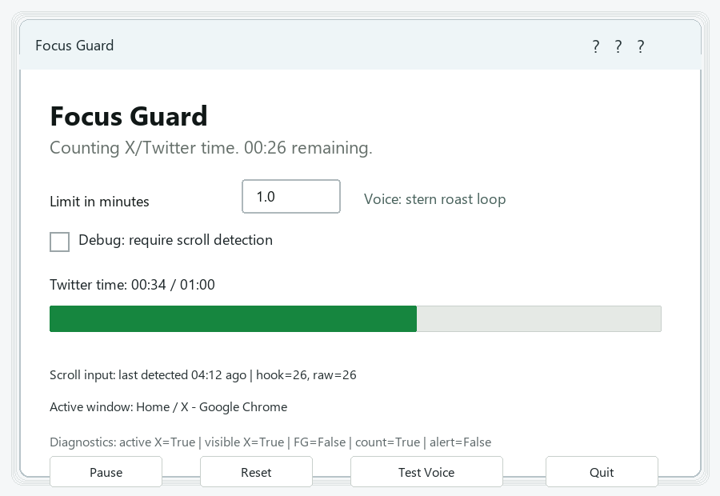

One-minute limit
By default, Focus Guard starts warning after one minute on X/Twitter.
Windows focus tool
Focus Guard is a small local Windows app that opens when you visit X/Twitter, counts your time there, and starts a stern voice reminder after one minute.
Windows only. Mac support will need a browser extension or separate Mac app.

By default, Focus Guard starts warning after one minute on X/Twitter.
The reminder uses Windows text-to-speech and keeps going until X/Twitter is closed or left.
A small watcher can open Focus Guard automatically when X/Twitter becomes active.
Demo
This short screen recording shows the app detecting X/Twitter and starting its reminder flow.
Install
Windows may show a warning because this is an unsigned PowerShell app. Only run it if you trust the source.
Privacy
Focus Guard does not upload data, read your browser history, or send anything to a server. It checks active window and browser tab titles to identify X/Twitter.
The app is intentionally simple: PowerShell, Windows Forms, and Windows text-to-speech. The roast script can be edited inside FocusGuard.ps1.